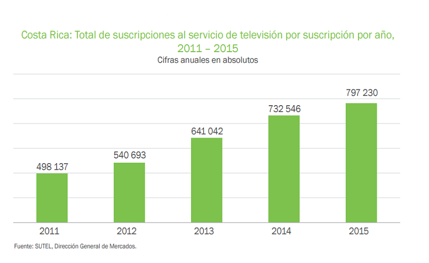
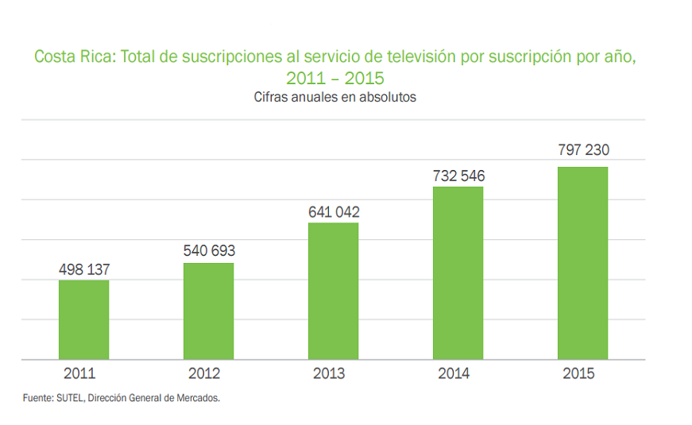

COSTA RICA

ESTADÍSTICAS
ACCESO A INTERNET EN LA RED MÓVIL SUSCRIPTORES A TELEFONÍA MÓVIL

TELEVISIÓN POR SUSCRIPCIÓN SUSCRIPTORES A TELEFONIA VOZ POR IP

Fuente: SUTEL - 2015
ENTIDAD REGULADORA


COSTA RICA
ACCESO A INTERNET EN LA RED MÓVIL SUSCRIPTORES A TELEFONÍA MÓVIL
TELEVISIÓN POR SUSCRIPCIÓN SUSCRIPTORES A TELEFONIA VOZ POR IP

Fuente: SUTEL - 2015